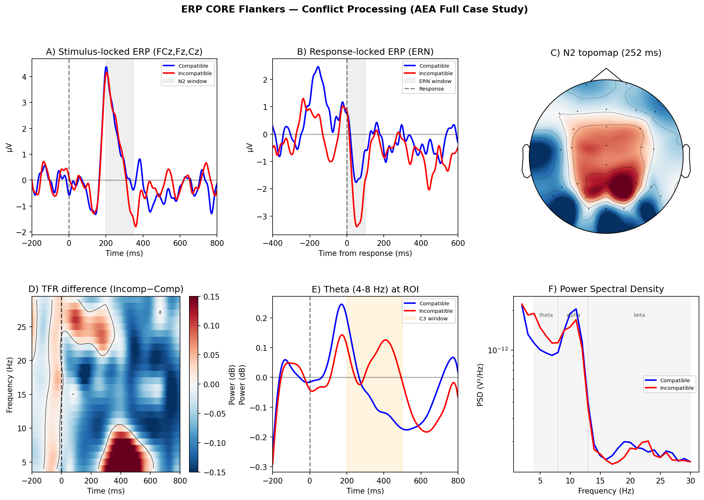
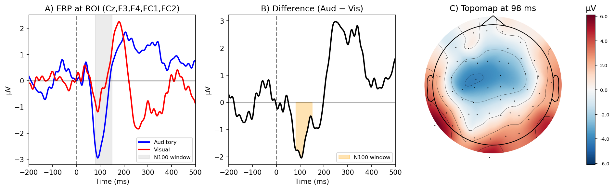

Run a published analysis.
Choose a recipe that matches your paradigm. Check its data requirements, confirm the plan, and run the specified analysis.
eeg-recipeExplore the recipes Shareable EEG analysis skills
An open library of EEG analysis skills for MNE-Python, with executable specifications and a numerically certified core.
Share the method. Run it on your data. Keep the plan, code, figures, methods, and review together.
Works with Codex CLI and Claude Code.
EEGLAB and FieldTrip provide independent comparisons and selected alternative paths.
The agent reads the skills and runs analysis code in your environment.
Start here
You need Git, Conda, and a signed-in agent client. The installer makes the original skills visible to that client inside the repository.
Run the terminal commands alongside.
Put compatible data in projects/my-study/raw/. Keep the repository root as your working directory.
Review the detected data and confirm the analysis plan before execution.
Default audits use a separate, fresh Codex CLI process. Set up the reviewer before running an audited workflow.
Open-source release
AEA v0.3.2 is available under the MIT licence. View the release.
git clone https://github.com/dengzhe-hou/auto-eeg-analysis.git
cd auto-eeg-analysis
conda env create -f environment.yml
conda activate aeais
python tools/install_skills.py --agent codex
codex$eeg-recipe ern-flankers --data projects/my-studygit clone https://github.com/dengzhe-hou/auto-eeg-analysis.git
cd auto-eeg-analysis
conda env create -f environment.yml
conda activate aeais
python tools/install_skills.py --agent claude
claude/eeg-recipe ern-flankers --data projects/my-studyExample: compatible Flankers data. Platform setup covers environment checks, Windows, and optional dependencies.
Three ways to work
Choose a recipe that matches your paradigm. Check its data requirements, confirm the plan, and run the specified analysis.
eeg-recipeExplore the recipes Define the claims, contrasts, and design. Compose the relevant skills into an analysis with a frozen plan and recorded outputs.
eeg-pipelinePlan a custom analysis A fresh reviewer checks the plan, statistics, figures, and methods. The default is gpt-6-astra at max effort in a read-only Codex CLI process.
eeg-auditSet up an audit The library
Plain Markdown specifications, executable code paths, reporting requirements, and documented failure modes.
From filtering and ICA through ERP, spectral analysis, decoding, connectivity, and source localization to figures and reporting.
eeg-preprocessFilter, reference, bad channels · L3eeg-icaICA and component labeling · L0eeg-epochSegmentation and artifact rejection · L3eeg-erpERPs and component measures · L3eeg-tfrTime-frequency analysis · L0eeg-spectralPower spectra and spectral parameters · L2eeg-statsStatistical inference · L3 for cluster testeeg-decodingMVPA and temporal generalization · L0eeg-behaviorBehavioral and trial-level associations · L0eeg-connectivityFunctional and directed connectivity · L0eeg-microstateMaps and temporal dynamics · L0eeg-complexityEntropy and complexity measures · L0eeg-sourceSource localization · L0eeg-bidsBIDS-EEG conversion · L0eeg-qcData-quality checks · L0eeg-group-compareGroup comparisons and effect sizes · L0eeg-figureFigures and data-fidelity checks · L1eeg-methods-textCOBIDAS-MEEG methods text · L1eeg-auditIndependent model review · L1eeg-reportReports and reproducibility receipts · L0eeg-pipelineAnalysis orchestration · L0eeg-recipeRecipe execution and version tracking · L0Levels apply to the evaluated outputs and configurations. Read the per-skill evidence.
Declared recipe status and available validation are separate. Follow each recipe's configuration when reproducing a result.
| Recipe | Analysis | Declared status |
|---|---|---|
ern-flankers | N2, response-related negativity, frontal theta | Validated |
mmn-oddball | Auditory mismatch negativity | Validated |
p300-oddball | P300 to rare targets | ExperimentalGroup-validation results recorded |
n170-faces | Faces versus non-face controls | Validated |
n170-face-inversion | Upright versus inverted faces | Experimental |
n400-semantic | Semantic priming | Validated |
alpha-attention-cueing | Posterior alpha modulation | Experimental |
resting-microstate | Resting microstate maps and dynamics | Validated |
resting-spectral-connectivity | Power spectra, aperiodic fits, connectivity | Validated |
complexity-anesthesia | Continuous complexity and entropy | ValidatedAwake-state check; anesthesia untested here |
Recipe files and source references are in recipes/. Open the source catalogue ↗
A numerically certified core
Independent numerical comparisons certify specified outputs. Behavioural evaluations and API tests cover other parts of the library. These are the existing evidence levels, with their measured configurations documented.
Preprocessing, epoching, ERP amplitudes, and the cluster test within the evaluated configurations.
Spectral band power checked against an independent Welch implementation.
Audit defect detection, methods coverage, and figure-to-data fidelity.
Documented interfaces, synthetic-data checks, or orchestration. See individual records for the exact check.
Reads pipeline logs and writes a COBIDAS-MEEG paragraph. Every number from disk, not memory. No other EEG tool does this.
From the analysis record
Historical case studies alongside later group validations. The two examples below are single-subject demonstrations.
N2, response-related negativity, and frontal theta, with Bonferroni correction. Two of the three planned claims were supported in this N=1 demonstration.

The N2 claim was not supported after correction. ERN: d = −0.23; theta: d = 0.20. The recorded runtime describes this historical run, not a general performance guarantee.
One participant, trial-level inference. Cluster permutation used 5,000 permutations. This historical audit used GPT-5.4; the current default reviewer is configured separately.

The original review found 4 critical and 9 major issues. The final recorded verdict was PASS-WITH-CAVEATS.
Built to be shared
AEA builds on the ARIS architecture and EEG domain knowledge, with MNE-Python for computation. AEA is to MNE what HuggingFace is to PyTorch.
Contribute a recipe or skill. Significant contributors are invited as co-authors on the AEA paper. Contribution guide ↗.